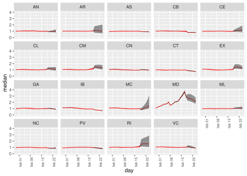
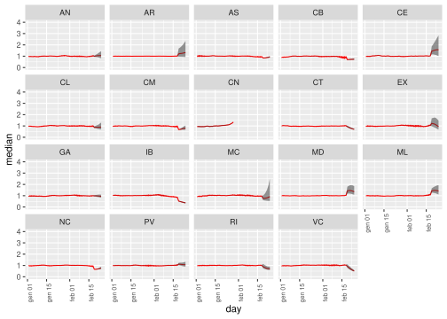

6 What if scenarios and predictions
Here we just present some of the possibilities offered by the model in estimating hypothetical situations.
6.1 Scenario 1.
Suppose that the last 10 days incidence in the Madrid region was incremented by 5% every day. What should be the impact on other regions and the rest of the country?
last.days=(nrow(cvirus)-20):nrow(cvirus)
datsc1=cvirus
datsc1$MD[last.days]=datsc1$MD[min(last.days)]*(1.05)^((0:9))
est.lstm(datsc1)
tt1=collect.lstmoutout(datsc1)
allres.bayes1=tt1[[1]]
final.res1=bayes.pred(allres.bayes1)
final.res1[c("ici","median","sci")]=final.res1[c("ici","median","sci")]/final.res[c("ici","median","sci")]
toplot=subset(final.res1,day>min(cvirus$day[last.days]))
pmax=ggplot(toplot,aes(x=day,y=median))+geom_line(colour="red")+
geom_ribbon(aes(x=day,ymin=ici,ymax=sci),alpha = 0.5)+
facet_wrap(. ~ region)+ylim(c(0,4))+
theme(axis.text.x = element_text(angle = 90,size=rel(0.8)))
pmax
## svg
## 26.2 Scenario 2.
Suppose that the same hipothecital incidence in the first case were observed Canary Islands instead of Madrid:
datsc2=cvirus
datsc2$CN[last.days]=datsc1$MD[last.days]
est.lstm(datsc2)
tt2=collect.lstmoutout(datsc2)
allres.bayes2=tt2[[1]]
final.res2=bayes.pred(allres.bayes2)
final.res2[c("ici","median","sci")]=final.res2[c("ici","median","sci")]/final.res[c("ici","median","sci")]
toplot=subset(final.res2,day>as.Date("2021-01-01"))
pmax=ggplot(toplot,aes(x=day,y=median))+geom_line(colour="red")+
geom_ribbon(aes(x=day,ymin=ici,ymax=sci),alpha = 0.5)+
facet_wrap(. ~ region)+ylim(c(0,4))+
theme(axis.text.x = element_text(angle = 90,size=rel(0.8)))
pmax
## svg
## 2